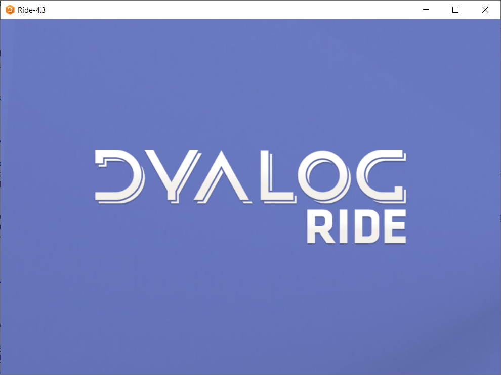
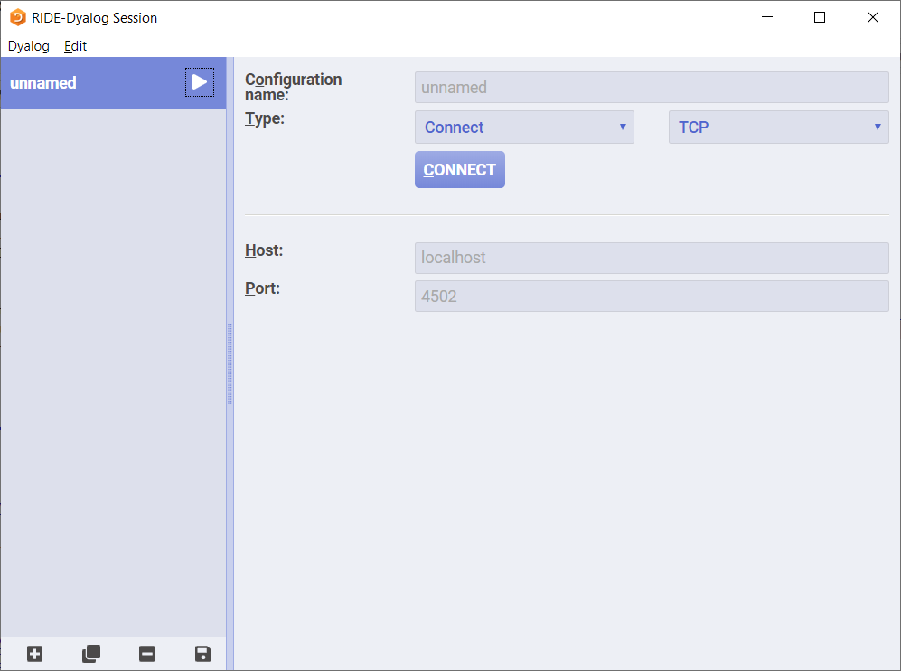
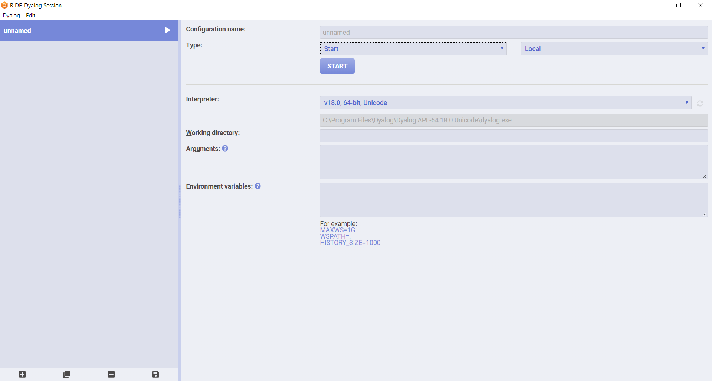

Chapter A - Getting Started¶
Before you begin to read this tutorial it is recommended that you install the software that is necessary in order for you to follow along and experiment for yourself. This Chapter contains practical information to help you set everything up so that you can make the most of this new learning experience.
This tutorial was written for Dyalog APL Unicode Edition, Version 18.0, during the second half of 2020. Please bear in mind that some figures/exact instructions may become outdated. If you already have an earlier version of Dyalog APL installed, most of the examples will still work; of course we recommend that you update your Dyalog APL installation.
1 Installing the Software¶
This Section will contain more detailed instructions on how to set up the software you need. To get APL up and running on your machine, you will most likely need two things:
Dyalog APL: a software that allows your computer to understand APL code and evaluate it;
an IDE (Integrated Development Environment): software that provides a nice interface for you to communicate with Dyalog APL, the component mentioned above.
Depending on your operating system you may need to follow a different set of steps to get everything up and running, so we advise you to jump to the Subsection that matches the operating system your machine is running.
1.1 - Microsoft Windows¶
If your machine is running Microsoft Windows then you should head over to Dyalog’s download zone and download Dyalog APL from there. Once the download is complete you can unzip the archive and open the file setup_readme.htm to read more detailed instructions. If you run the installer (setup.exe) with administrator privileges then you can likely accept all installation defaults.
After the installation is complete you should have Dyalog APL installed on your computer, as well as an APL keyboard that will allow you to type APL glyphs like ⍴ and ⍷. Try firing up the Dyalog APL interpreter, which should open something like this:

On Windows machines this is the recommended software to use when programming in APL. You may install RIDE if you prefer to use the IDE that Linux/macOS users will most likely run, but the classical Windows IDE that you just installed still provides for a richer experience.
If you do not intend to install RIDE (there is no need to) you can skip to Section 2. Otherwise continue reading below.
1.1.1 Installing RIDE¶
If you prefer to install RIDE you can head over to RIDE’s Releases page on GitHub and download the Windows executable you find there. A default installation will serve your needs. After the installation is complete, refer to Subsection 1.4 on how to start up RIDE.
1.2 - Linux¶
If your machine is running a Linux distribution, head over to Dyalog’s download zone and select the appropriate download with respect to your Linux distribution. After the download is complete you can install the package you just downloaded; once you do this, you can type dyalog on your command line to start a very basic terminal session. Try typing 3 + 3 and pressing Enter to see if APL returns the result 6. If it did, everything is going well.
If something went wrong or you need more help, you can refer to Dyalog’s Documentation pages. Under “UNIX-Specific Documentation” you can find more detailed instructions on how to install Dyalog APL on your system.
After Dyalog APL is installed it is recommended that you also install a suitable IDE, namely RIDE - the Remote IDE for Dyalog APL. Please refer to RIDE’s Releases page on GitHub to download and install the most recent version of RIDE.
After the installation is successful you can head over to Subsection 1.4 on starting up RIDE.
1.3 - MacOS¶
If your machine is running MacOS then you can get Dyalog APL and an appropriate IDE with just a single installation. Head over to Dyalog’s download zone and select the MacOS package. Installing the downloaded package on your machine should give you access to RIDE - the Remote IDE for Dyalog APL. After the installation is concluded you can head over to Subsection 1.4 on starting up RIDE.
If you run into trouble installing the software or you need more help, please refer to Dyalog’s Documentation pages. Under “MacOS-Specific Documentation” you can find more detailed instructions on how to install Dyalog APL on your system.
1.4 - Starting up RIDE¶
When you start up RIDE you should be greeted with a loading screen that looks similar to this:

After loading is complete RIDE will open a configuration window for you to connect to Dyalog APL. Depending on your platform you may or may not be greeted by a screen like the one below.

If you see a screen like this, open the dropdown where “Connect” is and change it to “Start”, so that instead you see a screen like the one in the figure below.

You can then press “Start” to open an APL interpreter session like the one in the figure below. If you didn’t see the screens above then you should already be in the APL interpreter session:

Try typing 3 + 3 and hit Enter. If the program prints a 6 below your input then all is good.
1.5 - Jupyter Notebook Kernel¶
This subsection points you to the right pages if you wish to install the Dyalog APL kernel for Jupyter notebooks. If you are a first time APLer or are inexperienced with programming we recommend you skip this for now, as you won’t really need it. Jupyter notebooks allow for a different programming experience and are very suitable for intertwining code snippets and text, like this book. If you just want to follow along the examples in the book you do not need to install this, as a standard APL interpreter session will be enough.
The Dyalog APL kernel can be found on GitHub and the appropriate installation instructions can be found in the wiki pages, along with all the dependencies that are needed. Be sure to have a working Dyalog APL installation before trying to install the Dyalog APL kernel.
2 First Contact¶
2.? - The Working Environment¶
2.1 - Typing APL glyphs¶
As you may have understood by now, APL uses a varied set of Unicode glyphs to represent many built-ins. A standard keyboard cannot type those symbols, so the installation you made provided you with the means of typing APL glyphs.
One way of inputting APL’s glyphs is through the language bar your IDE has. On the standard Windows interpreter the language bar looks like this when unfolded:

The RIDE will have a similar-looking language bar.
Inside the respective software, pressing a glyph in the language bar will place it in the position your cursor is at, so that is the most basic way of inputting APL glyphs. The recommended way, which we advise you to get used to, is by using the appropriate key bindings.
Your regular keyboard has keys that, when pressed, type the corresponding symbol that is printed on the key cap. For example, the A key types an a when you press it, and if you press Shift+A you type an A. With APL we introduce another “shifting” key so that the same key can be used to produce even more symbols. We will refer to this shifting key generally as APL, because this APL key can differ depending on the keyboard layout you are using, your operating system and the software you have installed.
2.1.1 The APL Key¶
If you already know what your APL key is, you can verify everything is working as expected by pressing APL+R: a ⍴ should be typed, the Greek letter Rho.
If you do not know which is your APL key, we will find out together.
If you are using RIDE, then chances are you are using ` as a hot-key. What this means is, to have a ⍴ printed you first hit `, which will print a ` in your cursor position, and then you hit R, which will replace `r altogether with ⍴. If you hover an APL glyph on the RIDE language bar it will open a tooltip which, at the top, tells you the keyboard combination you need to press in order to type the given glyph. The figure below shows the tooltip for ⍴:

If you are using the standard Windows interpreter and if you accepted all the installation defaults, then Windows installed two keyboard layouts for you which will let you type APL glyphs anywhere, like the APL interpreter, inside your browser or in Microsoft Word. Your APL key might change depending on the language of your keyboard layout or even other software you might have installed, but it is highly likely that it is one of Ctrl or Alt. To make sure, you can either try the Ctrl+R and Alt+R combinations to see which one types a ⍴, or you can hover the glyph ⍴ in the language bar and look at the top of the tooltip that shows, which also gives you instructions on how to type the given glyph. The figure below shows the tooltip for ⍴:

In my specific case it says my APL key is, in fact, the combination Ctrl+Alt or, equivalently, AltGr. That is, if I press AltGr+R then I type a ⍴.
If you need further help with typing APL glyphs you can refer to the APL Wiki page on “Typing Glyphs”.
2.1.2 Keyboard Layout Glyph Mapping¶
Depending on your physical keyboard layout, different APL symbols may be mapped to different keys. Below we use some APL incantations to show what symbols are mapped to what keys in a standard UK keyboard:
)copy dfns notes.keyboards
18↑k↓⍨¯1+⊃⊃⍸'Dyalog APL/en-GB keyboard'⍷k←⎕fmt keyboards
Each key in the figure above is divided in four areas: bottom left, top left, bottom right and top right. On the left you have the standard symbols you already know how to type in your keyboard. On the right, you have APL glyphs. Let’s focus on the E key. If you look at the bottom right you can see the glyph ∊, which you can type with APL+E. Likewise for all other symbols that are on the bottom right corner of its key cap.
If you look at the top right corner of the E key, you can find the ⍷ glyph, which is accessed with APL+Shift+E. Likewise, all glyphs that appear on the top right corner of its key cap are accessed with APL+Shift and the corresponding key.
The figure above relevant because when we introduce new glyphs in the book, we will tell you which key combinations to press but those may not work if your layout is special. As an example, if you look at the figure displayed above, you can see that inside the rectangle for the key A is the Greek letter Alpha ⍺. Because it is on the bottom right of the key cap, you can type it with APL+A. However, if you look at the French AZERTY keyboard, displayed in the figure below, you will see that ⍺ is in the same physical position but inside a different key. Q in this case.
)copy dfns notes.keyboards
18↑k↓⍨¯1+⊃⊃⍸'Dyalog APL/fr-FR'⍷k←⎕fmt keyboards
Throughout this book we will assume you are using a physical US or UK keyboard when telling you which keys to press to type specific glyphs. If you are not, you can refer to this help page for more physical layout mappings and for Mac laptop-specific layouts.